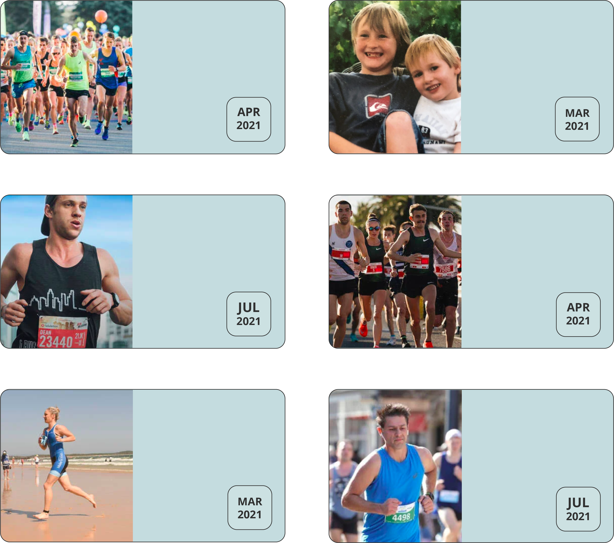

Fundraise
There are so many ways you can raise money and have an impact - as an individual, family or business. Every dollar raised means more wishes can be fulfilled for critically ill kids and their families. Find your nearest fundraiser by entering your postcode here!
>nearest fundraisers to you
These are the nearest fundraisers closest to you. Head to the official pages of these fundraisers to learn more or sign up for your place in the event by clicking on one of these fundraisers.
other fundraisers near you
Australian Running
Festival
Join thousands of
runners in Canberra
as part of Team Wish
Bays' Wish
Join the ride of a lifetime
to bring life-changing
wishes to sick kids
Run Melbourne
Be a part of Team
Wish and hit the
streets of Melbourne
Melbourne Marathon
Festival
Experience one of
the world's liveable
cities on foot
Noosa Triathalon
Festival
Take part in one of
the most sought after
triathlons in the world
City-Bay Fun Run
Take on the challenge
of South Australia's
largest fun run